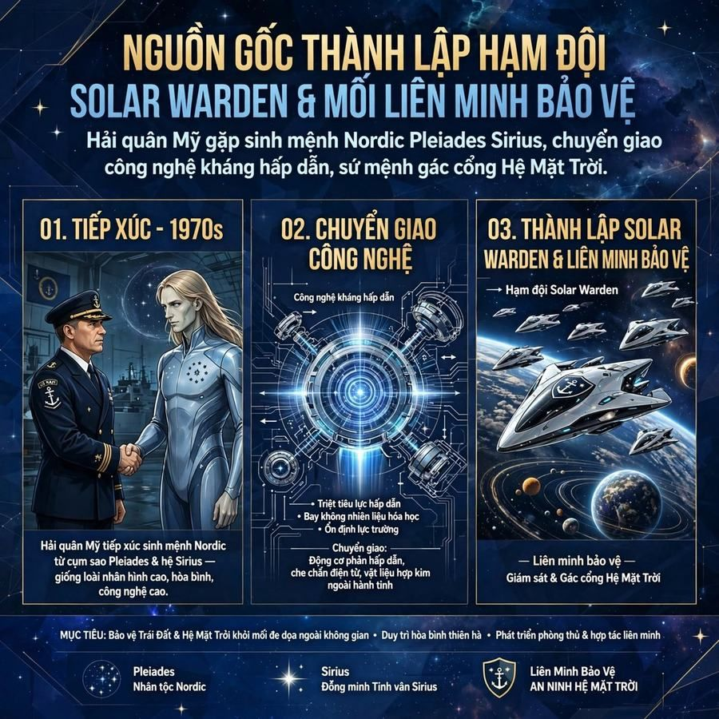
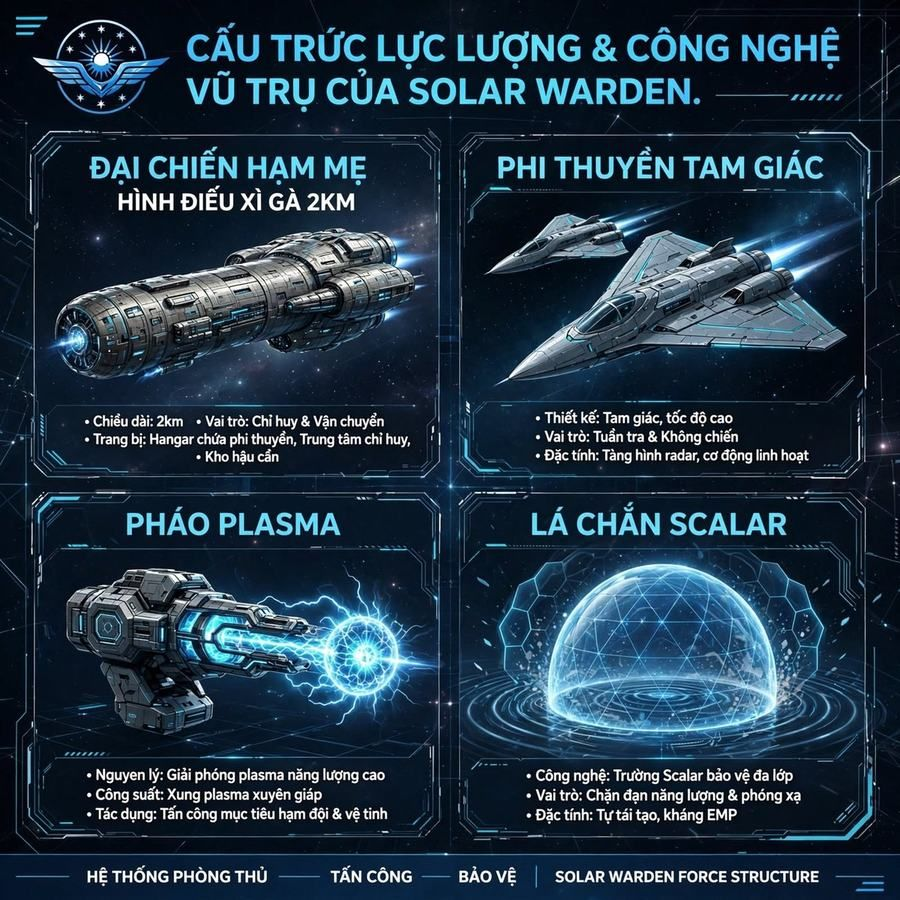
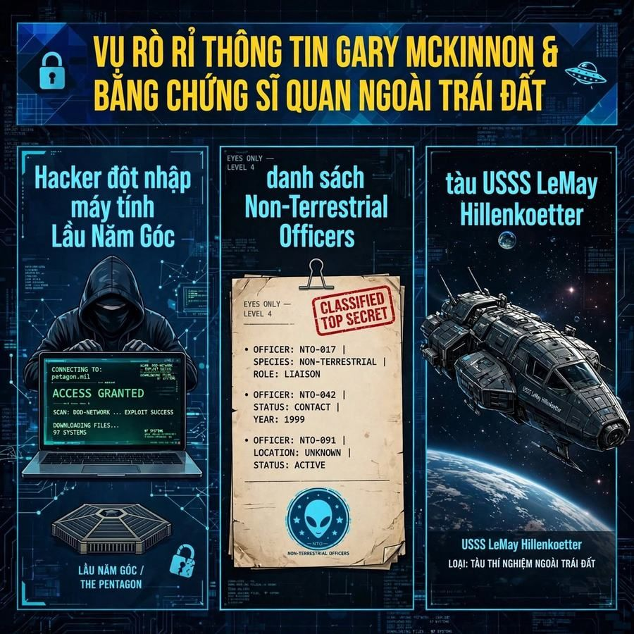
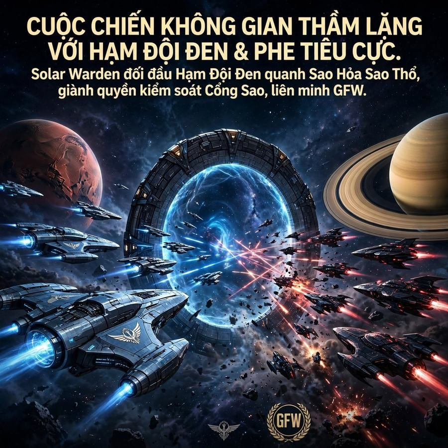
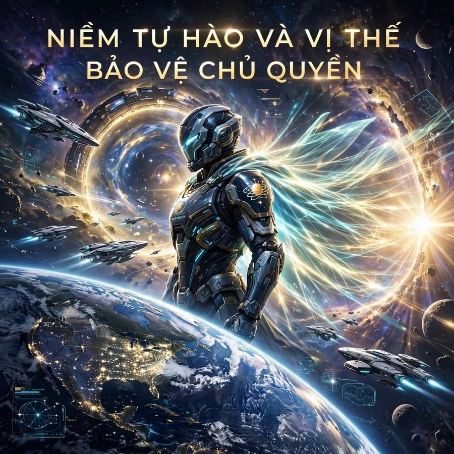

Trang chủ / Chuyên đề 5: Chương Trình Không Gian Bí Mật / Kỳ 42
Chuyên đề 5 · Kỳ 42 / 90
HẠM ĐỘI SOLAR WARDEN CỦA HẢI QUÂN MỸ & CUỘC CHIẾN KHÔNG GIAN THẦM LẶNG

Ở Kỳ 1, chúng ta đã vạch trần nguồn gốc lịch sử khởi nguyên của các Chương trình Không gian Bí mật từ thập niên 1930–1940, sự rút lui xuống căn cứ Nam Cực và mối liên minh bóng tối giữa Hạm Đội Đen (Dark Fleet) với Đế chế Bò sát Draco tiêu cực. Tuy nhiên, trong cuộc chiến không gian sâu thẳm, không phải tất cả các chương trình bí mật của con người đều phục vụ cho phe bóng tối. Đứng ở thế đối trọng trực tiếp để bảo vệ chủ quyền Trái Đất và Hệ Mặt Trời chính là Hạm đội Solar Warden (Người Gác Cổng Mặt Trời) — một chương trình không gian bí mật quy mô lớn do Hải quân Mỹ thiết lập từ cuối những năm 1970 và đầu thập niên 1980! Hạm đội Solar Warden được thành lập trong bối cảnh lịch sử nào? Cơ cấu lực lượng gồm các đại chiến hạm không gian hình điếu xì-gà dài hàng kilômét và phi thuyền tuần tra chiến lược vận hành ra sao? Sự thật đằng sau vụ xâm nhập máy tính Hải quân Mỹ của tài năng tin học Gary McKinnon phát hiện danh sách "Các sĩ quan ngoài Trái Đất" (Non-Terrestrial Officers) là gì? Và cuộc chiến không gian thầm lặng giữa Solar Warden với Hạm Đội Đen cùng phe xâm lược tiêu cực đang diễn ra ra sao?
1. NGUỒN GỐC THÀNH LẬP HẠM ĐỘI SOLAR WARDEN & MỐI LIÊN MINH BẢO VỆ
Trước nguy cơ Trái Đất bị đe dọa bởi các lực lượng xâm lược ngoài hành tinh tiêu cực và sự bành trướng của Hạm Đội Đen, một nhánh tình báo chiến lược của Hải quân Mỹ đã quyết định xây dựng một tuyến phòng thủ không gian riêng biệt. A. Sự Hậu Thuẫn Của Các Liên Minh Thiên Hà Hòa Bình
- Hỗ Trợ Công Nghệ Từ Các Chủng Tộc Tiến Hóa: Trong những năm 1950–1960, Hải quân Mỹ đã thiết lập liên lạc bí mật với các chủng tộc ngoài hành tinh hòa bình (như các sinh mệnh dạng người Nordic từ hệ sao Pleiades và Sirius).
- Đưa Công Nghệ Kháng Hấp Dẫn Vào Quân Sự: Phe hòa bình đã hỗ trợ trao truyền các nguyên lý động cơ trường điện từ xoáy, công nghệ kháng hấp dẫn và lá chắn năng lượng để giúp loài người xây dựng lực lượng tự vệ không gian độc lập. B. Sứ Mệnh "Người Gác Cổng Hệ Mặt Trời"
- Bảo VỆ Ranh Giới Hệ Mặt Trời: Được chính thức đưa vào vận hành từ đầu thập niên 1980 dưới thời Tổng thống Ronald Reagan, Solar Warden mang sứ mệnh tuần tra toàn bộ Hệ Mặt Trời, giám sát các tuyến đường du hành liên sao và ngăn chặn các tàu chiến tiêu cực xâm nhập bầu khí quyển Trái Đất.

2. CẤU TRÚC LỰC LƯỢNG & CÔNG NGHỆ VŨ TRỤ CỦA SOLAR WARDEN
Quy mô và sức mạnh công nghệ của Solar Warden vượt xa hoàn toàn những hình dung của công chúng về tiềm lực quân sự trên bề mặt. A. Các Đại Chiến Hạm Khổng Lồ Hình Điếu Xì-Gà (Cigar-shaped Carriers)
- Chiều Dài Lên Đến Hàng Kilômét: Solar Warden sở hữu khoảng 8 đến 10 đại chiến hạm mẹ hình điếu xì-gà dài từ 1,5 km đến hơn 2 km. Các con tàu này đóng vai trò là những căn cứ không gian di động, chứa hàng trăm phi thuyền đánh bộ và máy bay tuần tra nhỏ hơn.
- Tàu Hỗ Trợ Đánh Bộ Hình Tam Giác: Các phi thuyền tác chiến cỡ nhỏ (mang hình dạng đĩa bay hoặc cánh nêm tam giác) có khả năng tăng tốc vượt vận tốc ánh sáng và di chuyển linh hoạt giữa các chiều không gian. B. Hệ Thống Vũ Khí & Lá Chắn Năng Lượng Siêu Chiều
- Vũ Khí Xung Chùm Tia Plasma & Laser: Solar Warden không sử dụng đạn thô hay tên lửa thông thường, mà trang bị pháo năng lượng lượng tử, súng xung cao tần và hệ thống lá chắn trường điện từ vô hướng (Scalar Shields) có khả năng bẻ cong các đòn tấn công từ đối phương.

3. VỤ RÒ RỈ THÔNG TIN GARY MCKINNON & BẰNG CHỨNG "SĨ QUAN NGOÀI TRÁI ĐẤT"
Sự tồn tại của Solar Warden đã bị lộ diện ra ánh sáng qua một trong những vụ xâm nhập an ninh mạng chấn động nhất lịch sử. A. Cuộc Đột Nhập Máy Tính Hải Quân Mỹ (2001–2002)
- Hacker Người Anh Tìm Kiếm Sự Thật: Kỹ sư tin học Gary McKinnon đã sử dụng phần mềm quét cổng an ninh để đột nhập vào các máy tính của Lầu Năm Góc và Bộ Lệnh Không Gian Hải Quân Mỹ với mục đích tìm kiếm tài liệu giải mật về UFO và năng lượng miễn phí. B. Danh Sách "Non-Terrestrial Officers" & Tên Tàu Chiến
- Phát Hiện Danh Sách Sĩ Quan Không Gian: McKinnon đã bàng hoàng phát hiện ra một danh sách mật ghi rõ "Non-Terrestrial Officers" (Các sĩ quan ngoài Trái Đất) cùng danh sách điều chuyển nhân sự giữa các tàu chiến mẹ (như tàu USSS LeMay và USSS Hillenkoetter).
- Danh Xưng "USSS" (United States Space Ship): Tiền tố "USSS" khẳng định sự tồn tại của một lực lượng hạm đội vũ trụ hoàn toàn tách biệt khỏi các tàu chiến trên biển (USS) của Hải quân thông thường!

4. CUỘC CHIẾN KHÔNG GIAN THẦM LẶNG VỚI HẠM ĐỘI ĐEN & PHE TIÊU CỰC
Trong suốt nhiều thập kỷ qua, một cuộc chiến tranh không gian quy mô lớn đã âm thầm diễn ra ngay trong Hệ Mặt Trời mà cư dân bề mặt không hề hay biết. A. Đối Đầu Trực Tiếp Với Hạm Đội Đen & ICC
- Ranh Giới Quyền Lực Tại Hệ Mặt Trời: Trong khi Hạm Đội Đen và Liên Minh Các Tập Đoàn Không Gian (ICC) phục vụ cho tham vọng thâu tóm tài nguyên và liên minh với phe Bò sát tiêu cực, Solar Warden giữ vai trò lực lượng kháng chiến, kiên quyết bảo vệ sự an toàn cho loài người Trái Đất.
- Các Trận Đánh Ngoài Quỹ Đạo Sao Hỏa & Sao Thổ: Nhiều cuộc đụng độ bằng pháo năng lượng và lá chắn từ trường đã diễn ra xung quanh quỹ đạo Sao Hỏa, vành đai tiểu hành tinh và các Mặt Trăng của Sao Thổ để giành quyền kiểm soát các Cổng Sao không gian. B. Sự Phối Hợp Với Liên Đoàn Thế Giới Thiên Hà (GFW)
- Giải Giải Phóng Hệ Mặt Trời: Trong những năm gần đây, Solar Warden đã chính thức liên minh với Liên Đoàn Thế Giới Thiên Hà (GFW), tiến hành quét sạch các căn cứ ngầm tiêu cực của Hạm Đội Đen trên Sao Hỏa và tiểu hành tinh Ceres, đưa Hệ Mặt Trời tiến gần hơn đến thời khắc giải phóng hoàn toàn!

5. LỜI KẾT KỲ 2: NIỀM TỰ HÀO VÀ VỊ THẾ BẢO VỆ CHỦ QUYỀN
Kỳ 2 của chuyên đề 5 khép lại mang đến cái nhìn tự hào và thức tỉnh cho chúng ta:
- Loài Người Đã Có Lực Lượng Bảo Vệ Không Gian: Nhân loại không hoàn toàn đơn độc hay yếu ớt trước các thế lực xâm lược bên ngoài. Những sĩ quan và chiến binh quả cảm thuộc Solar Warden đã và đang thầm lặng chiến đấu để bảo vệ sự bình yên cho bầu trời Trái Đất!
- Sẵn Sàng Cho Kỷ Nguyên Bùng Nổ Tri Thức: Khi rào chắn bí mật bị gỡ bỏ, các công nghệ không gian tiên tiến của Solar Warden sẽ được trao trả cho cộng đồng, mở ra Kỷ nguyên du hành liên sao rực rỡ cho toàn thể nhân loại!
